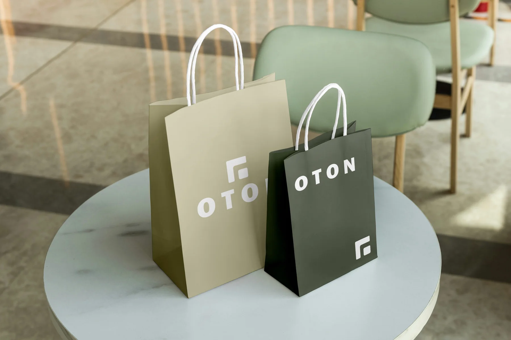
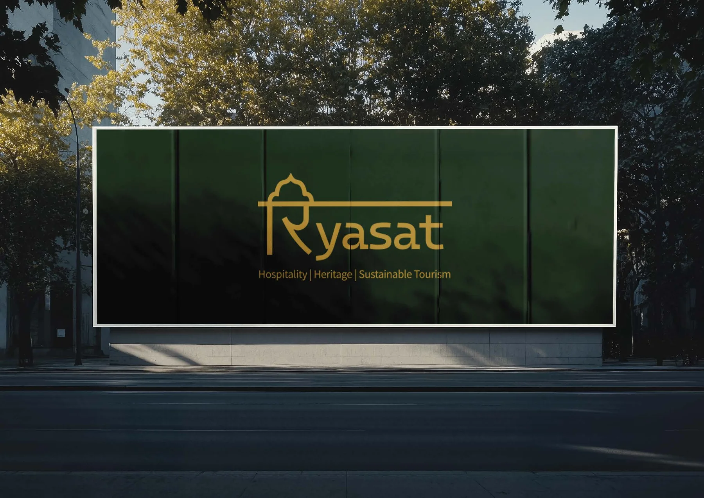
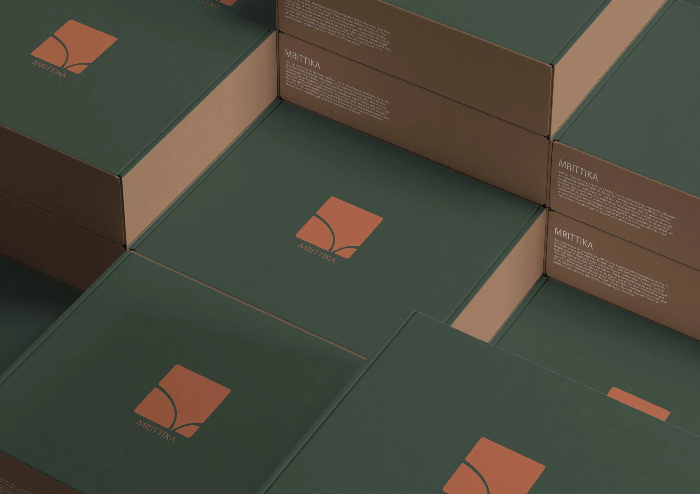

Branding · Selected work
Three identities, from a client menswear label to heritage hospitality and a craft furniture brand. Each opens into the thinking behind it.

01
Client project · Menswear
A contemporary menswear label. A strong mark, a monochrome base and one warm accent, from the neck label to the shopping bag.

02
Assignment · Hospitality
A heritage hospitality brand with the promise "Leader with Heart": name, voice, logotype, colour, photography and a full set of applications.

03
Assignment · Furniture and desk
Furniture and desk pieces from natural materials. Soft architectural tones, a leaf-like mark and calm packaging.
That is the branding work
More is coming: MyDayss and a playzone for everything else. In the meantime, let us talk.